Ultra / Pro / Nano
Google DeepMind · Gemini · 2023-12 · 主干正代
Gemini 1.0
Ultra / Pro / Nano 把原生多模态与设备—云端分层放进同一 family。

原生 text / image / audio / video
从数据到模型的多模态联合训练
编辑判断
Gemini 1.0 的核心不是后接视觉模块，而是把多模态作为基础训练目标。
证据边界
技术报告较充分；具体服务版本仍需以 API 文档为准。